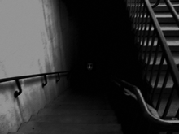

The Foundation is an international secret society, consisting of a scientific research institution with a paramilitary intelligence agency to support their goals. Despite its secretive premise, the Foundation is entrusted by governments around the world to capture and contain various unexplained phenomena that defy the known laws of nature (referred to as "anomalies", "SCP objects", "SCPs", or colloquially "skips"). They include living beings and creatures, artifacts and objects, locations and places, abstract concepts, and incomprehensible entities which display supernatural abilities or other extremely unusual properties. If left uncontained, many of the more dangerous anomalies will pose a serious threat to humans or even all life on Earth. Their existence is hidden and withheld from the general public in order to prevent mass hysteria, and allow human civilization to continue functioning normally.
Examples of contained SCPs
SCP-055 is something that causes anyone who examines it to forget its various characteristics, thus making it indescribable except in terms of what it is not.
SCP-087 is a staircase that appears to descend forever. The staircase is inhabited by SCP-087-1, which is described as a face without a mouth, pupils or nostrils. The sound of a child crying is also omnipresent, but the source is unknown; descending the stairs has no effect on the cries' volume, despite them seemingly originating from the "bottom" of the stairwell.

SCP-108 is a Nazi bunker system that is only accessible through a portal found in a woman's nose.
SCP-173 is a humanoid statue composed of rebar, concrete and Krylon spray paint. It is stationary when directly observed, but it attacks people and snaps their neck when the line of sight with it is broken. It is extremely fast, to the point where it can move multiple meters while the observer is blinking.
SCP-294 is a coffee machine that can dispense anything that does or can exist in liquid form.
SCP-426 is a toaster that can only be referred to in the first person.
SCP-1171 is a home whose windows are always covered in condensation; by writing in the condensation on the glass, it is possible to communicate with an extra-dimensional entity whose windows are likewise covered in condensation. This entity bears significant hostility towards humans but does not know that the Foundation members are humans.
SCP-1609 is a mulch that teleports into the lungs of anyone who approaches it in an aggressive fashion or while wearing certain uniforms. It was previously a peaceful chair that teleported to whichever nearby person felt the need to sit down, but it entered its current aggressive state after being inserted into a woodchipper by members of the Global Occult Coalition.
SCP-3008 is an IKEA retail store that has an infinite interior space with no outer physical bounds, causing prospective customers to be trapped inside the building after they become lost within its associated pocket dimension. SCP-3008's interior, dubbed SCP-3008-1, contains a rudimentary civilization formed by those customers, who are forced to survive and defend themselves against hostile creatures known as SCP-3008-2: tall, faceless humanoids wearing IKEA employee uniforms that become violently aggressive towards all humans during the dimension's simulation of night, in which its lights go out.